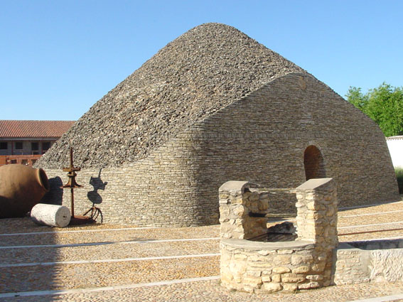
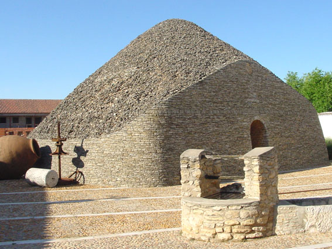
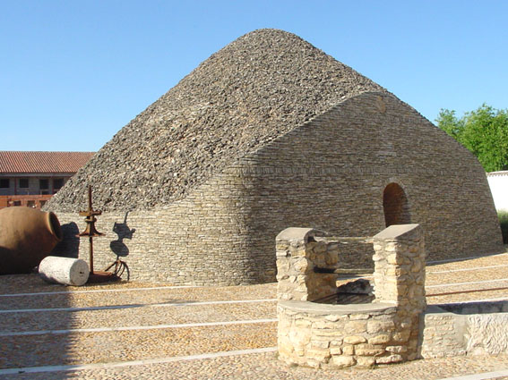

Tomelloso es una ciudad y municipio español situado en el noreste de la provincia de Ciudad Real, en la comunidad autónoma de Castilla-La Mancha. Se ubica en el centro geográfico de la región natural de La Mancha y se trata del municipio con mayor población de la comarca y el octavo de Castilla-La Mancha.
Actualmente 36.024, de los que 17.951 son hombres y 18.073 son mujeres.
Tomelloso es un importante centro de producción vitivinícola, aunque en el sector agrícola también destacan la vid y los cultivos de regadío. Por otra parte, la ciudad también ha desarrollado su vertiente industrial, en gran parte basada en el vino.
Tomelloso se comenzó a poblar en 1530 en tierras baldías de la villa de Socuéllamos, en torno a un viejo pozo utilizado por los pastores de la zona para abrevar a sus ganados (el pozo Tomilloso), y al lado de los restos de un antiguo villar.
